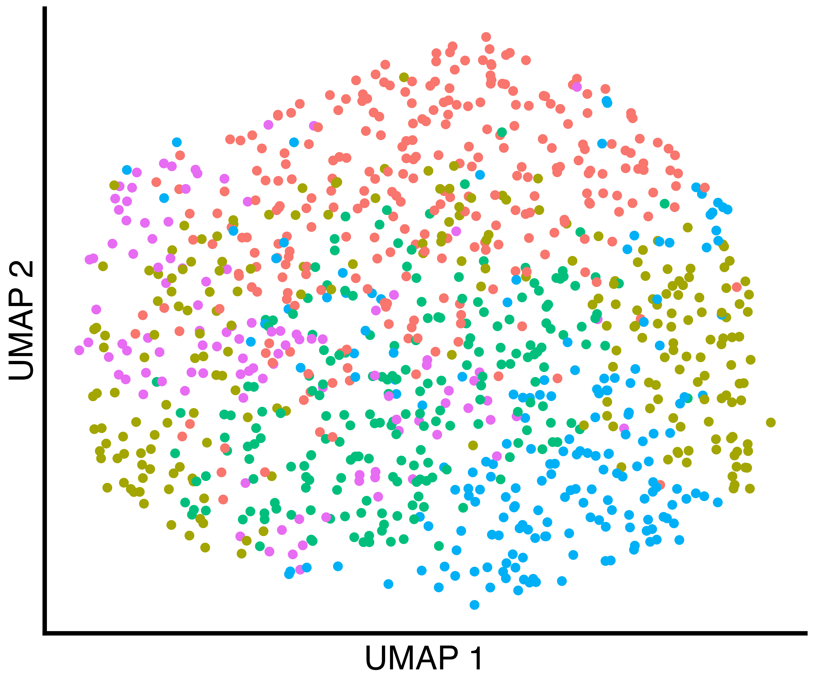

1. Clustering Simulated Data (Figure 1)
1_figure1.Rmd
suppressPackageStartupMessages({
library(splatter)
library(Seurat)
library(SeuratObject)
library(patchwork)
library(grid)
library(callback)
library(callbackreproducibility)
})Simulated Data With One True Group
First, we simulate data using splatter and convert the
data format to a SeuratObject. Setting
group.prob = c(1.0) results in a single group.
sim.groups <- splatter::splatSimulate(group.prob = c(1.0), method = "groups",
verbose = FALSE,
nGenes = 1000,
batchCells = 1000,
dropout.type = "experiment",
de.prob = 0.05)
seurat_obj <- Seurat::as.Seurat(sim.groups, counts = "counts", data = NULL)
seurat_obj <- SeuratObject::RenameAssays(object = seurat_obj, originalexp = 'RNA')
seurat_obj@meta.data$Group = 1Then, we run a typical analysis using Seurat and also
cluster using callback.
seurat_obj <- callback::seurat_workflow(seurat_obj, num_variable_features = 1000, resolution_param = 0.8)
seurat_obj <- callback::FindClustersCallback(seurat_obj, cores=6)Finally, we plot a UMAP of the results including the true labels
(only one in this case), the clusters found by Seurat with
default parameters, and the clusters found by callback.
simulation_one_group_scatter <- callbackreproducibility::custom_scatter(seurat_obj, reduction = "umap", group_by = "Group", x_title = "UMAP 1", y_title = "UMAP 2", pt.size = 6) + Seurat::NoLegend()
simulation_one_group_seurat_scatter <- callbackreproducibility::custom_scatter(seurat_obj, reduction = "umap", group_by = "seurat_clusters", x_title = "UMAP 1", y_title = "UMAP 2", pt.size = 6) + Seurat::NoLegend()
simulation_one_group_callback_scatter <- callbackreproducibility::custom_scatter(seurat_obj, reduction = "umap", group_by = "callback_clusters", x_title = "UMAP 1", y_title = "UMAP 2", pt.size = 6) + Seurat::NoLegend()
ggplot2::ggsave("one_group_scatter.png", simulation_one_group_scatter, width = 1.2 * 2^12, height = 2^12, units = "px")
ggplot2::ggsave("one_group_seurat_scatter.png", simulation_one_group_seurat_scatter, width = 1.2 * 2^12, height = 2^12, units = "px")
ggplot2::ggsave("one_group_callback_scatter.png", simulation_one_group_callback_scatter, width = 1.2 * 2^12, height = 2^12, units = "px")| True Groups | Seurat Clusters | callback Clusters |
|---|---|---|
 |
 |  |
Simulated Data With Three True Groups
First, we simulate data using splatter and convert the
data format to a SeuratObject. Setting
group.prob = c(0.6, 0.2, 0.2) results in three groups in
proportions of 60%, 20%, and 20%.
sim.groups <- splatter::splatSimulate(group.prob = c(0.6, 0.2, 0.2), method = "groups",
verbose = FALSE,
nGenes = 1000,
batchCells = 4000,
dropout.type = "experiment",
de.prob = 0.05)
seurat_obj <- Seurat::as.Seurat(sim.groups, counts = "counts", data = NULL)
seurat_obj <- SeuratObject::RenameAssays(object = seurat_obj, originalexp = 'RNA')Then, we run a typical analysis using Seurat and also
cluster using callback.
seurat_obj <- callback::seurat_workflow(seurat_obj, num_variable_features = 1000, resolution_param = 0.8)
seurat_obj <- callback::FindClustersCallback(seurat_obj, cores=6)We plot a UMAP of the results including the true labels, the clusters
found by Seurat with default parameters, and the clusters
found by callback.
simulation_three_groups_group_scatter <- callbackreproducibility::custom_scatter(seurat_obj, reduction = "umap", group_by = "Group", x_title = "UMAP 1", y_title = "UMAP 2", pt.size = 2) + Seurat::NoLegend()
simulation_three_groups_seurat_scatter <- callbackreproducibility::custom_scatter(seurat_obj, reduction = "umap", group_by = "seurat_clusters", x_title = "UMAP 1", y_title = "UMAP 2", pt.size = 2) + Seurat::NoLegend()
simulation_three_groups_callback_scatter <- callbackreproducibility::custom_scatter(seurat_obj, reduction = "umap", group_by = "callback_clusters", x_title = "UMAP 1", y_title = "UMAP 2", pt.size = 2) + Seurat::NoLegend()
ggplot2::ggsave("three_group_scatter.png", simulation_three_groups_group_scatter, width = 1.2 * 2^12, height = 2^12, units = "px")
ggplot2::ggsave("three_group_seurat_scatter.png", simulation_three_groups_seurat_scatter, width = 1.2 * 2^12, height = 2^12, units = "px")
ggplot2::ggsave("three_group_callback_scatter.png", simulation_three_groups_callback_scatter, width = 1.2 * 2^12, height = 2^12, units = "px")| True Groups | Seurat Clusters | callback Clusters |
|---|---|---|
 |
 |
 |
Finally, we plot the grid of UMAPs.
column_label_1 <- wrap_elements(panel = textGrob('True Labels', gp = gpar(fontsize = 64)))
column_label_2 <- wrap_elements(panel = textGrob('Seurat Default', gp = gpar(fontsize = 64)))
column_label_3 <- wrap_elements(panel = textGrob('callback', gp = gpar(fontsize = 64, fontfamily = "Courier")))
umap_grid <- column_label_1 + column_label_2 + column_label_3 +
simulation_one_group_scatter + simulation_one_group_seurat_scatter + simulation_one_group_callback_scatter +
column_label_1 + column_label_2 + column_label_3 +
simulation_three_groups_group_scatter + simulation_three_groups_seurat_scatter + simulation_three_groups_callback_scatter +
plot_layout(widths = c(5, 5, 5),
heights = c(1,3,1,3))
ggplot2::ggsave("umap_grid.png", umap_grid, width = 2 * 1.5 * 2^12, height = 2 * 2^12, units = "px")